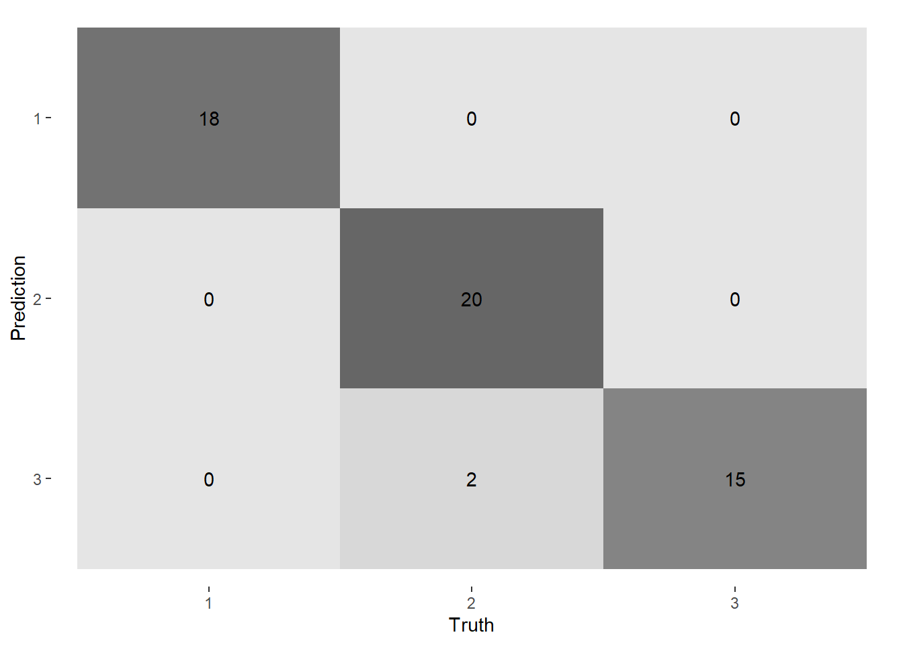

Chapter 12 Machine Learning
Artificial Intelligence (AI) and Machine Learning (ML) in particular have gained a lot of attention in recent years. With the increase of data availability, data storage, and computing power, many techniques that were just dreams back then are now easily accessible, and used. And of course, the sensory and consumer science field is not an exception to this rule as we start seeing more and more ML applications…although in our case, we do not have Big Data per se, but we do have diverse data! For many of us, AI and ML seems to be a broad and complex topic. This assertion is true, and in fact it would deserve a whole book dedicated just to it. However, our intention in this chapter is to introduce and demistify the concept of ML, by: 1. explaining the differences between supervised and unsupervised ML models, 2. proving that you were already doing it long ago, perhaps whithout knowing, 3. extending it to more advanced techniques, 4. highlighting its main applications in the field. To do so, some basic code and steps will be provided to the reader to get familiar with such approach. Throughout this chapter, some more specialized resources are provided for those who have the courage and motivation to dig deeper into this topic.
12.1 Introduction
Machine Learning is currently a hot topic in the sensory and consumer science field. It is one of the most game-changing technological advancements to support consumer packaged goods companies in the development of new products, playing a considerable role in speeding up the R&D process (and at the same time reducing the costs). In today’s fast-moving and increasingly competitive corporate world, companies that are embracing, adopting and opening their minds to digital transformation and artificial intelligence (AI), moving towards the age of automation, are not one but many steps ahead of their competitors.
Machine Learning (ML) is a branch of AI, which is based on the idea that systems can learn from data, and that has the capability to evolve. Generally speaking, ML refers to various programming techniques that are able to process large amounts of data and extract useful information from it. It refers to data analysis methods that build intelligent algorithms that can automatically improve through the experience gained from the data and can identify patterns or make decisions with minimal human intervention, without being explicitly programmed. ML focuses on using data and algorithms to mimic the way humans learn, gradually improving their accuracy.
Defining the objectives or the situation where ML would bring value is the very first step of the process. Once that is clear, the next step is to collect data or dig into historical data sets to understand what information is available and/or has to be obtained. The data varies according to the situation, but it may refer to product composition or formulation, instrumental measurements (e.g., pH, color, rheology, GC-MS, etc.), sensory attributes (e.g., creaminess, sweetness, bitterness, texture, consistency, etc.), consumer behavior (e.g., consumption frequency, use situation, dietary constraints, etc.), demographics (e.g., age, gender, size of household, etc.) and consumer responses (e.g. liking, CATA questions, JAR questions, etc.) just to name a few.
First of all, it should be stressed that the size of the data set and its quality are very important as they impact directly the model’s robustness. Here are general recommendations (to be adapted to each situation, data type, and objectives):
- The higher the number of statistical units the better, 12-15 being the minimum recommended when statistical units correspond to samples.
- The number of measurements (instrumental, sensory and/or consumer measurements) and the number of consumers evaluating the products are also very relevant to the model’s quality. In practice, a minimum of 100 participants is usually recommended for consumer tests, which is deemed sufficient to apply ML (although here again, the more the better). For data quality, the variability of the samples is one of the most important aspects (besides the standardization of data collection). The larger the variability between samples, the broader the space the model covers. Additionally, it is strongly recommended to capture the consumers’ individual differences, not only through demographic information, but also through perception (including with rapid sensory description methods, Just About Right (JAR) or Ideal Profile Method (IPM)). Eventually, within-subject design (i.e. sequential monadic design) provide better quality models as they allow accounting for individual response patterns.
12.2 Introduction of the Data
For this section, we use the wine data set from the {rattle} package (https://rdrr.io/cran/rattle.data/man/wine.html). This data consists of the results of a chemical analysis of wines grown in a specific area of Italy. In total, the results of 13 chemical analyses (e.g., alcohol, malic acid, color intensity, phenols, etc.) are provided for 178 samples that represent three types of wines.
library(tidyverse)
library(rattle)
wine <- rattle::wine %>%
as_tibble()12.3 Machine Learning Methods
The notion of Machine Learning is vast, as it covers a large variety of analyses. In fact, ML algorithms are often classified based on the goals of their analysis. Three main groups are often considered:
- Unsupervised Learning:
Unsupervised ML aims at finding structure within the data. Input are unlabeled data, meaning that no output values are yet known. In this case, the algorithms operate independently from any information about the data to find patterns and trends. For instance, this is achieved by learning from the data distribution the features that distinguish between statistical entities using similarity and dissimilarity measurements. Such ability to discover unknown patterns in the data makes such algorithms ideal for exploratory analysis. In Sensory and Consumer Science, the best known Unsupervised ML techniques are Principal Component Analysis (PCA) for dimensionality reduction and hierarchical cluster analysis (e.g. for consumer segmentation).
- Supervised Learning:
Supervised ML is arguably the most popular type of ML: When people talk about ML, they often refer to Supervised techniques. Supervised ML takes labeled data as input, meaning that the statistical entities are defined by one or more output variables. The aim of the algorithm is then to a find a mapping function that connects the input variables with those output variables. Ultimately, the ML model aims to explain output variables using the input variables. A common situation requiring Supervised ML in Sensory and Consumer Science consists in predicting consumer responses (e.g. liking) using sensory descriptions, analytic data, demographics, or any other information. ML models provide insights on how to improve product performance, and allow predicting consumer responses of new prototypes or products. Another common situation is to use Supervised ML to predict the sensory profile of products using formulation data (i.e., ingredients and process parameters).
- Semi-supervised Learning:
Semi-Supervised ML is not an ML approach per se. Instead, it is a combination of both Unsupervised and Supervised approaches. It first aims to create an output variable using Unsupervised techniques, and then to explain or use this output variable using other information through Supervised ML. A good example of Semi-Supervised approach consists in defining clusters of consumers based on liking (unsupervised), and to characterize these clusters using demographic data using decision trees for instance (supervised). External Preference Mapping is another example since it first reduces dimensionality of the sensory data through PCA (unsupervised), and then uses these dimensions to explain the consumers’ liking scores using regressions (supervised).
A forth type of Machine Learning is called Reinforcement Learning that relies on feedback provided to the machine. It is a technique that enables an agent to learn through trial and error from its own actions and experiences. Reinforcement Learning is commonly used in some tech applications (e.g. gaming and robotics), specially when large data sets are available. Such approach has little reach in sensory and consumer science at the moment. Therefore, we are not going to develop it further here.
12.4 Unsupervised Machine learning
In sensory and consumer science, unsupervised learning models are mainly used for Dimensionality Reduction and for Clustering.
12.4.1 Dimensionality Reduction
Dimensionality reduction is a technique used to transform a high dimensional space into a lower dimensional space that still retains as much information as possible. In practice, the original high-dimensional space involves many variables that are correlated with each other, but that could be summarized by latent variables or principal components, which are orthogonal to each other.49
Most frequently, dimensionality reduction is performed for the following reasons:
- Summarizing Data (and removing redundant features);
- 2D or 3D visualization of the data (most important information);
- Finding latent variables and untangling initial variables;
- Pre-processing data to then reduce training time and computational resources;
- Improving ML algorithms accuracy by removing the lower dimensions (the one containing less information) often considered as noise;
- Avoiding problems of over-fitting.
Some of these approaches were presented earlier in this book, in particular in Section 10. However, there are numerous dimensionality reduction methods that can be used depending on the data at hand. The most common and well known methods used in the sensory and consumer science are the ones that apply linear transformations, including Principal Components Analysis (PCA), Factor Analysis (FA), and derivatives such as (Multiple) Correspondence Analysis, Multiple Factor Analysis, etc.
Let’s apply this technique to the wine data. To get familiar with the data, we can first visualize the information on a 2D plot, and then reduce the data set to the first 2 dimensions only.
Since the different variables represent analytical measures that are defined using different scales, a standardized PCA is performed. This is the default option in PCA() from {FactoMineR}(scale.unit=TRUE):
library(FactoMineR)
res_pca <- PCA(wine, quali.sup=1, scale.unit=TRUE, graph=FALSE)The results of the PCA can be visualized using {factoextra}:
library (factoextra)
# fviz_eig(res_pca, addlabels=TRUE, ylim=c(0,50))
fviz_pca_biplot(res_pca, repel=TRUE, label="var", col.var="red", col.ind="black")The first plane of the PCA suggests that there are 3 distinct groups of wines. Let’s define them mathematically using cluster analysis. For this process, we propose to reduce the full data to its first two components only. This approach is used here to illustrate how PCA can be used as a pre-processing step. Additionally, such pre-processing can help detecting clearer patterns in the data, as we will see in the next section with clustering.
Note that such use of PCA as a pre-processing step was already done earlier in Section 10.4.4 when the sensory space was reduced to its first 2 dimensions before performing the external preference mapping.
wine_reduced <- as_tibble(res_pca$ind$coord[,1:2])12.4.2 Clustering
Clustering is a technique used when dealing with high-dimensional data to discover groups of observations that are similar to each other (or different from each other). In other words, it is a method that groups unlabeled data based on their similarities and differences in a way that objects with strong similarities are grouped together, and are separated from objects to whom they have little to no similarities.
Again, a very common application in S&C Science is to segment consumers based on a variety of factors such as shopping or usage behavior, attitudes, interests, preferences. As consumers being associated in the same market segment tend to respond similarly, segmentation is a key strategy for companies to better understand their consumers, and tailor effectively their products or marketing approaches for the different target groups. Similarly, it is also used to classify products in homogeneous groups based on their analytical, sensory and/or consumer description in order to analyze the product offer and identify different segments on the market.
There are any clustering approaches and algorithms. They can be categorized into a different types including exclusive (e.g. k-means), hierarchical (see Section 10.4.2 for an example) and probabilistic (e.g. Gaussian Mixture Model). The first two are most widely used and well known in the sensory field.
Although agglomerative hierarchical clustering (HAC) is more common in sensory and consumer research, an example illustrating such approach was already provided in Section 10.4.2. For that reason, here we propose to present another approach using k-means. K-means clustering is a popular unsupervised machine learning algorithm for partitioning a given data set in a way that the total intra-cluster variation is minimized. Both approaches (HAC and k-means) however differ in their ways of forming clusters, For instance, the algorithm of k-means require the user to pre-specify the number of clusters to be created, whereas HAC produces a tree (called dendrogram) which helps visualizing the data hierarchical structure and deciding on the optimal number of clusters. Detailed information about clustering methods and analysis can be found in the book Practical Guide to Cluster Analysis in R: Unsupervised Machine Learning by Alboukadel Kassambara (Kassambara (2017)).
In order to cluster our wines, let’s start with defining the optimal number of clusters (k) to consider. This can be done using fviz_nbclust() from {factoextra}. This function creates a graph which represents the variance within the clusters. On this representation, the bend (also called elbow) indicates the optimal number of clusters, any additional cluster beyond that point has less value.
fviz_nbclust(wine_reduced, kmeans, method = "wss")Here, the optimal solution consists in defining 3 clusters.
Next, the k-means algorithm starts with randomly selecting k (here 3) centroids. In order to be able to reproduce our results (despite the randomness), we propose to initially set a seed (through set.seed ())50. Otherwise, it is recommended to set within kmeans() a number of random sets, i.e. the number of times (here 20) R will try different random starting assignments. Increasing this number yields more stable results.
set.seed(123)
wine_kmeans <- kmeans(wine_reduced, centers=3, nstart=20)Finally, the results can be visualized using fviz_cluster() from {factoextra}:
fviz_cluster(list(data=wine_reduced, cluster=wine_kmeans$cluster),
ellipse.type="norm", geom="point", stand=FALSE)In the resulting plot, the 3 clusters are clearly separated, as can be seen by their little to no overlap.
An interesting suggestion is to run the same analysis on the full data (here, we limited it to the first 2 dimensions of the PCA) and to compare the results.
When applying such clustering techniques, one may sometimes encounter very atypical variables that could be deemed noisy. This may occur in when analyzing consumer hedonic data and finding few consumers who have an atypical response pattern. This may create enough ‘noise’ in the data to blur the main data structure and affect the outcome of the k-means algorithm. To solve this problem, Vigneau et al. (2016) have developed strategies to segment consumers while setting aside atypical or irrelevant consumers. This can be achieved by using either a noise cluster where to dump ‘irrelevant’ consumers or a sparse latent variable (Sparse LV) strategy. Both strategies have been implemented in the {ClustVarLV} package, and can be selected using “kplusone” or “sparselv” parameters in the CLV_kmeans() function.
It should be noted that, in sensory and consumer science, it is increasingly more frequent to aim to cluster panelists, based not only on one variable (i.e. their liking for a series of products), but on sets of several variables (i.e. their description of products for a series of attributes, or their responses to a full online questionnaire) or even on distance matrices (as obtained from a free sorting task, for example). Segmentation strategies would also apply to such data.
For instance, Cariou and Wilderjans have developed an approach for clustering around latent variables for three-way data (CLV3W). This approach that is implemented in {ClustVarLV} could be used to detect panel disagreement in three-way conventional sensory profiling data (Wilderjans and Cariou 2016) or to segment consumers based on multi-attribute product evaluation, by removing the non-negativity constraint to the CLV3W() procedure (Cariou and Wilderjans 2018). As for free sorting and projective mapping data, the CLUSTATIS partitioning algorithm could be applied using {ClustBlock} Llobell et al. (2020).
12.5 Supervised learning
There are many ways to carry out Supervised ML, which again would require an entire book dedicated just to it. In this section, we will introduce you to the basics, which should give you a nice kick-start for your own analysis. For those who want to learn more on this topic, we recommend reading “Hands-On Machine Learning with R”, by Bradley Boehmke and Brandon Greewell (https://bradleyboehmke.github.io/HOML)[https://bradleyboehmke.github.io/HOML], and to “Tidy Modeling with R” by Max Kuhn and Sylvia Silge (https://www.tmwr.org/)[https://www.tmwr.org/] for more in-depth information.
12.5.1 Workflow
In sensory and consumer science, supervised learning is commonly carried out using a regression type of analysis, where for instance consumer ratings are used as output (target), and product information (i.e. sensory profiles and/or analytical measurement) are used as input. The goal of the analysis is then to explain (and sometime predict) the (say) liking scores using the sensory information about the products.
To do so, models are initially trained using a subset of the data (called training set). Once obtained, the model is then tested and validated on another part of the data (called test set and validation set)51. Once this process is done, the model can be continuously improved, discovering new patterns and relationships as it trains itself using new data sets.
12.5.2 Regression
Regression methods approximate the target variable52 with (usually linear) combination of predictor variables. There are many regression algorithms varying by type of data they can handle, type of target variable, and additional aspects such as the ability to perform dimensionality reduction. The most relevant methods for sensory and consumer science will be presented here.
- Linear regression:
The simplest and most popular variant is linear regression in which a continuous target variable is approximated as linear combination of predictors in a way that the sum of squares of the errors (SSE) is minimized. It can be for example used to predict consumer liking of a product based on its sensory profile, but the user has to keep in mind that linear regression can in some cases return predicted values outside the reasonable range of target values. This can be addressed by capping the predictions to a desired range. Functions in R to apply linear regression are: lm() and glm() or parsnip::linear_reg() %>% parsnip::set_engine("lm") when using the {tidymodels} workflow.
- Logistic regression:
Logistic regression is an algorithm which - by use of logistic transformation - allows to apply the same approach as linear regression to cases with binary target variables. It can be used in R with glm(family = "binomial") or parsnip::logistic_reg() %>% parsnip::set_engine("glm") when using the {tidymodels} workflow.
- Penalized regression:
Often, the data used for modeling contain a lot of (highly correlated) predictor variables. In such cases of multicolinearity, linear and/or logistic regression may become unstable and produce unreasonable results. This can be addressed through the use of so-called penalized regression. Instead of minimizing pure error term, the algorithm minimizes both the error and the regression coefficients at the same time. This leads to more stable predictions.
There are three variations of penalized regression and all of them can be accessed via glmnet::glmnet() (\(\beta\) is set of regression coefficients and \(\lambda\) is a parameter to be set by user or determined from cross-validation):
- Ridge regression (L2 penalty) minimizes \(SSE + \lambda \sum|\beta|^2\) and drives the coefficients to smaller values;
- Lasso regression (L1 penalty) minimizes \(SSE + \lambda \sum|\beta|\) and forces some of the coefficients to vanish, which allows some variable selection
- Elastic-net regression is a combination of the two previous variants \(SSE + \lambda_1 \sum|\beta| + \lambda_2 \sum|\beta|^2\).
Penalized regression can be also ran in the {tidymodels} workflow using parsnip::linear_reg() %>% parsnip::set_engine("glmnet").
- MARS:
One limitation of all above-mentioned methods is that they assume linear relationship between the predictor and the target variables. Multivariate adaptive regression spline (MARS) addresses this issue by modeling non-linear relationship with piece wise linear function. This gives a nice balance between simplicity and ability to fit complex data, for example \(\Lambda\)-shaped once where there is a maximal point from which function decreases in both directions. In R this model can be accessed via earth::earth() function.
- PLS:
In case of single and multiple target variables, partial least squares (PLS) regression can be applied. Similarly to PCA, PLS looks for components that maximizes the explained variance of the predictors, while simultaneously maximizing their correlation to the target variables. PLS can be applied with lm() by specifying multiple targets or in the {tidymodels} workflow with plsmod::pls() %>% parsnip::set_engine("mixOmics").
12.5.3 Other common Supervised ML algorithms
Additional Supervised ML techniques include:
- K-nearest neighbors
A very simple, yet useful and robust algorithm that works for both numeric and nominal target variables is K-nearest neighbors. The idea is that for every new observation to predict, the algorithms finds K closest points in the training set and use either their mean value (for numeric targets) or the most frequent value (for nominal targets) as prediction. This algorithm can be used with kknn::kknn() function or in the {tidymodels} workflow with parsnip::nearest_neighbor() %>% parsnip::set_engine("kknn").
- Decision trees
Decision tree algorithms model the data by splitting the training set in smaller subsets in a way that each split is done by a predictor variable so that it maximizes the difference in target variable between the subsets. One important advantage of decision trees is that they can model complex relationships and interactions between predictors. To use decision tree in R, rpart::rpart() or in the {tidymodels} workflow parsnip::decision_tree() %>% parsnip::set_engine("rpart") can be used.
- Black boxes
The black boxes algorithm includes models for which the structure is too complex to directly interpret relationship between predictor variables and a value predicted by the model. The advantage of such models is their ability to model more complicated data than in case of interpretable models, but they have a greater risk of overfitting. Also, the lack of clear interpretation may not be acceptable in some business specific use cases. The later problem can be addressed by use of explanation algorithms that will be discussed in a later part of this chapter.
- Random forests
A random forest is a set of decision trees, each one trained on random subset of observations and/or predictors. The final prediction is then obtained by averaging the individual trees’ predictions. By increasing the number of trees, we also increase the precision of the results. The random forest algorithm hence minimizes some of the limitations of a decision tree algorithm, by for instance reducing the risks of overfitting, and by increasing its precision.
12.6 Practical Guide to Supervised Machine Learning
Now that we have a general idea of the purpose of Supervised ML approach, let’s build a simple machine learning model in the context of a sensory and consumer study. But before doing that, let’s introduce the {tidymodels} framework
12.6.1 Introduction to the {tidymodels} framework
R contains many fantastic systems for building machine learning models. For various reasons that will be explained here, we propose to use the {tidymodels} framework (https://www.tidymodels.org/) for our analysis.
Similarly to the {tidyverse}, {tidymodels} is a collection of packages dedicated to modeling. It contains packages such as {rsample} (general resampling infrastructure), {yardstick} (performance metrics), {recipes} (pre-processing and feature engineering steps for modeling), {workflows} (modeling workflow), {broom} (tidy statistical objects) and {parsnip} (fitting models) just to name a few. Yet, the similarity between {tidymdels} and {tidyverse} does not end there since {tidymodels} is built (and uses) on the {tidyverse}, hence being the perfect extension for modeling data.
Besides modeling data, {tidymodels} aims in tidying the process of modeling data. Such process is done at different levels:
- Tidying the entire modeling workflow by integrating the different steps (including data preparation, model fitting, and data prediction) into simple functions (
{parnsip}). - Tidying (by standardizing) the inputs and outputs for the different Machine Learning algorithms53
- Tidying the models so that the outputs can be easily extracted and used.
- Providing all the relevant functions required for modelling in one unique collection of packages.
Regardless of the algorithm used, the typical modeling approach used by {tidymodels} is as following:
- Split your data into training and test set (including sets for Cross-Validation)
- Build a recipe by informing the model and any pre-processing step required on the data
- Define the model (and its parameter) to consider
- Create a workflow by combining the previous step together
- Run your model
- Evaluate your model
- Predict new values
For more information, we refer the readers to “Tidy Modeling with R” by Max Kuhn and Julia Silge (https://www.tmwr.org/)[https://www.tmwr.org/].
Let’s load the {tidymodels} package:
library(tidymodels)12.6.2 Sampling the data
As mentioned earlier, an important step consists in splitting the data into a training and testing set. To do so, the function initial_split() is used. This function takes as input the original data and returns the information on how to make the different partitions. In practice, such partition could be obtain completely randomly by simply specifying the proportion of data in each partition (here prop=0.7 meaning that 70% of the data is in the training set, the rest being in the test set). However, we can provide constraints so that the structure of the original data is respected. In our case, Type contains 3 levels which may not be perfectly balanced. By specifying strata=Type, we ensure that the different splits respect the original data in terms of proportions for Type.
After the initial_split(), the training() and testing() functions are used to obtain the training and testing subsets.
wine_split <- initial_split(data=wine, strata="Type", prop=0.7)
wine_train <- training(wine_split)
wine_testing <- testing(wine_split)12.6.3 Cross Validation
Cross-validation (CV) is an important step for checking the model quality. To allow performing CV, additional sets of data are required. These sets of data can be obtained through resampling method before building the model. In practice, for each new set of data, a subset is used for building the model, the other subset being then used to measure the performance of such model (similar to the training and testing set defined earlier). However, in this case, the resampling is only performed on the training set defined earlier.
To generate such sets of data, the vfold_cv function is used. Here we start with a 5-fold cross-validation first. Again, strata=Type to a conduct stratified sampling to ensure that each resample is created within the stratification variable.
wine_cv <- wine_train %>%
vfold_cv(v=5, strata=Type)12.6.4 Data Preprocessing {recipes}
The {recipes} package contains a rich set of data manipulation tools which can be used to preprocess the data and to define roles for each variable (e.g. outcome and predictor). To add a recipe, the function recipe() is used. This function has two arguments: a formula and the data (here wine_train). Any variable on the left-hand side of the tilde (~) is considered the model outcome. In our example, we want to use a machine learning model to predict the type of the wine, therefore Type would be the target on the left hand side of the ~. On the right-hand side of the tilde are the predictors. One can write out all the variables, but an easier option is to use the dot (.) to indicate all other variables as predictors.
model_recipe <- wine_train %>%
recipe(Type ~ .)In this instance, we do not need to preprocess further any of the variables present in the data. Yet if it was the case, we could use the various step_*() functions, which then perform any transformation required on the declared variables including:
step_log()for a log transformation;step_dummy()to transform categorical data into dummy variables (useful to combine with functions suchall_nominal_predictors(),starts_with(),matches(), etc.);step_interact()creates interaction variables;step_num2factor()converts numeric variables to factor;step_scale()scales numeric variables;step_pca()converts numeric data into 1 or more principal components.- etc.
It should be noted that, by default, any of the pre-processing performed here on the trained data set is also applied adequately on the test set. For instance, with
step_scale(), the mean and standard deviation are computed on the training data, and are then applied on the test data (the means and standard deviation are not re-computed from the test set).
12.6.5 Model definition
Once the model formula is defined, and the instructions for the data pre-processing is set, we need to decide which type of ML algorithm should be used. Let’s consider the random forest classifier for the wine data using rand_forest() (the algorithm proposed by the {ranger} package is used here). This function has 3 hyper-parameters (mtry, trees, min_n) which can be tuned to achieve the best possible results.
Model tuning is the process of finding the optimal values for those parameters. In order to find the best hyper-parameter combinations, we need to define a search range for each of them. When we choose the family of the model we want to use (rand_forest in this example), we have to let the machine knows that a given parameter (mtry, trees, min_n) is not defined explicitly and will be tuned instead. To achieve such a result, we must use the function tune().
rf_spec <- rand_forest(
mtry = tune(),
trees = tune(),
min_n = tune()) %>%
set_mode("classification") %>%
set_engine(engine = "ranger")12.6.6 Set the whole Process into a workflow
Finally, we combine the model and the recipe into a single workflow():
rf_wf <- workflow() %>%
add_recipe(model_recipe) %>%
add_model(rf_spec)12.6.7 Tuning the parameters
In the previous section, placeholders for tuning hyper-parameters were created. It is time to define the scope of the search, and to choose the method for searching the parameter space. To do so, grid_regular() can be used:
params_grid <- rf_spec %>%
parameters() %>%
update(mtry = mtry(range = c(1,2)),
trees = trees(range = c(10,200))) %>%
grid_regular(levels=5)Now that the hyper-parameter search range is defined, let’s look for the best combination using the tune_grid() function. The cross-validation set is used for this purpose, so that the data used for training the model has not been used yet.
tuning <- tune_grid(rf_wf, resamples=wine_cv, grid=params_grid)The autoplot() function is called to take a quick look at the tuning object.
autoplot(tuning)Ultimately, the best combination of parameters is obtained using the select_best() function. Such paramaters is defined based on the quality of the model, which can be estimated through a various metrics. Here we decided to use roc_auc (Area Under the Receiver Operating Characteristic Curve), as it provides a reliable estimate of the quality of the model.
params_best <- select_best(tuning, "roc_auc")12.6.8 Model training
The best parameters can be applied to our model, and the final model can be trained using the entire training set. This is done using the fit() function that we apply to our workflow.
final_model <- rf_wf %>%
finalize_workflow(params_best) %>%
fit(wine_train)12.6.9 Model evaluation
A very important part in building machine learning models is to assess the quality of the model. A first approach consists in applying the model thus obtained on the testing data set (wine_testing), which the model has not seen yet.
To do so, the predict() function is used. The predict() function of {tidymodels} allows adding in an easy way the predictions obtained from models to the original data. This procedure allows comparing the predictions with the actual data:
obs_vs_pred <- wine_testing %>%
bind_cols(predict(final_model, .))Here, obs_vs_pred is a data frame which contains both the actual wine type (Type) and the predicted wine type (.pred_class). Comparing these two variables allow judging the quality of the model. Such comparison can be done through a confusion matrix. A confusion matrix is a table where each row represents instances in the actual class, while each column represents the instances in a predicted class. From the autoplot() function, it appears that the predictions were almost perfect (only two wines was wrongly classified).
cm <- conf_mat(obs_vs_pred, Type, .pred_class)
autoplot(cm, type = "heatmap")
There are several ways to look into the model quality, being the approach and model metrics highly dependent on the situation/type of model used. In our case, that we have a multiclass classification, we can besides the confusion matrix, check the model accuracy. Classification accuracy is a metric that summarized the fraction of predictions our model got right (somehow it brings similar information we get from the confusion matrix). We have to first organize the data to have have the model predictions. Then we directly calculate the accuracy and also kappa accuracy, using the functions accuracy () and kap (). Kappa (kap()) is a similar measure to accuracy(), but is normalized by the accuracy that would be expected by chance alone. It can be very useful when one or more classes have large frequency distributions.
obs_vs_pred_prob <- bind_cols(wine_testing %>% select(Type), predict(final_model, wine_testing, type = "prob")) %>%
mutate(Type = as.factor(Type))
accuracy(obs_vs_pred, truth = "Type", estimate = ".pred_class")## # A tibble: 1 × 3
## .metric .estimator .estimate
## <chr> <chr> <dbl>
## 1 accuracy multiclass 0.964kap(obs_vs_pred, truth = "Type", estimate = ".pred_class")## # A tibble: 1 × 3
## .metric .estimator .estimate
## <chr> <chr> <dbl>
## 1 kap multiclass 0.945The accuracy and Kappa accuracy of our model is extremely high (> 0.94), emphasizing its great model performance.
A simple and easy way to have a higher level understanding on what variables play the most important role in our model (wine classification) is through the called Feature Importance plot. To create this plot, we need to first create an object known as explainer from the tidymodels workflow, using the function explain_tidymodels from the package {DALEXtra}. This function will take as argument: the model to be explained, the data to be used to calculate the explanations which should be passed without a target column (wine_train removing the columns Type) and the numeric vector with outputs/scores (y). The explainer object can be then used to create the Feature Importance plot using the function variable_importance.
The interpretation is very straightforward, in the way that variables are conveniently ordered according to their importance. The higher the cross entropy loss after permutations, the more important the variable is to in our case, decide to which group each wine belong to. So, for example, if color is permuted (spoil the variable), it turns out that the model will be more than 2.5 times worse than the one with the correct color variable. In summary, cross entropy loss after permutations measures how much the permutation of a variable would impact the model performance. The higher the impact, the most important the variable.
library(DALEXtra)
library(modelStudio)
data_to_explain <- wine_train
explainer <- explain_tidymodels(
model = final_model,
data = data_to_explain %>%
select(-Type),
y = data_to_explain$Type
)
var_imp <- variable_importance(explainer, loss_function = loss_cross_entropy, type = "ratio")
plot(var_imp)Building a machine learning model may seem complicated at first since there are many steps and important things to watch out for. Although we presented here a simple example, for one specific situation of classification, you will realize that this way of working (typical modeling approach showed), is highly applicable to other situations. Again, the main idea of this chapter is to open your mind, provide you with the basics, and ultimately motivate you to seek and learn more about machine learning!
References
When all the principal components are considered, none of the information present in the raw data is lost, and their representation is simply shifted from an unstructured high-dimensional space to a structured lower-dimensional space.↩︎
set.seed()fixes random selections so that they can easily be reproduced.↩︎It is common practice to split the data so that the model is built by using 60% of the data, the remaining 40% being used for testing and validation. It is however important to use separate data for these steps to avoid any over-fitting.↩︎
This is a bit of simplification since in some cases, it is some transformations of combination of predictors that approximate the target variable, as in logistic regression for example.↩︎
To avoid re-inventing the wheel and to be more flexible,
{tidymodels}allows calling ML algorithm from various packages in a standardized way, even when those packages often require the data to be structured in a different way, use different names for similar parameters, etc.↩︎